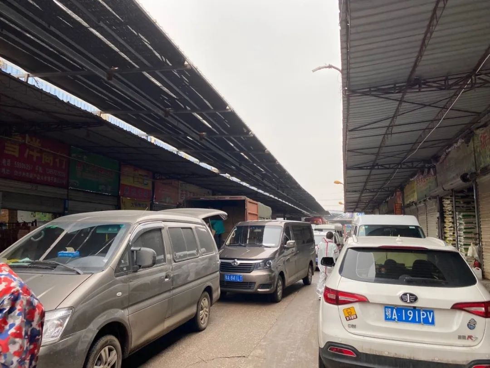

武汉人买菜的真实图景
原文链接 备份链接 他们理解小区被封，理解只能选择被塞了四大包汤圆的团购套餐，理解菜价成倍上涨，理解要继续忍受生活上的不便，才有可能早一点等来结束的一天。 文 | 谢婵 编辑 | 小豆 武汉伢王嘉兴给父母打电话，得知小区业主群里推荐 …

一级批发商并没有太多涨价，大型超市的价格也相对稳定，但经过中间环节，居民最终支付的菜价上涨明显。共有33家电商平台可以提供生鲜外卖服务，一些社区团购的菜价高、质量参差不齐、购买不便，居民希望服务改进的呼声较高

文 |《财经》记者 刘以秦 王小
编辑 | 谢丽容
“8元一根黄瓜，什么时候黄瓜开始论根卖了？”一位武汉市武昌区居民告诉《财经》记者，由于小区封锁，他们只能通过电商平台和社区团购采买物资，近期日常消耗的蔬菜价格一天一变，且必须按套餐购买，100元的套餐蔬菜，只够一家三口吃两天。
2月26日，《财经》记者走访了位于武汉市江夏区的武汉白沙洲农副产品大市场，这是武昌最大的农贸市场。市场工作人员告诉《财经》记者，疫情期间，市场一直在正常运转，没有休息。位于武汉黄陂区的四季美农贸城也在正常经营。
该农贸市场接受记者采访的多位批发商提到，疫情期间，蔬菜批发的价格并没有明显上涨。鸡蛋批发商孙先生说：“如果养鸡场那边涨了，我们就跟着涨，但基本没有太大的涨幅。”另有蔬菜批发商郑先生表示，疫情期间，货运物流费用涨了3倍，但是他们依然保持蔬菜批发价格稳定，“涨价了没人买的。”
《财经》记者了解到，目前市场里，草鱼价格6元一斤，420枚一箱的鸡蛋售价180元，普通胡萝卜售价7毛一斤，精品胡萝卜售价1.5元一斤。但经过中间环节到了最终消费者手中，这些日常商品的价格有时会上涨数倍。多位居民提供给《财经》记者团购价信息显示，鸡蛋均价1元一枚，最高2元一枚，胡萝卜均价4元一斤，草鱼最低13元一斤。
作为一级批发市场，白沙洲市场主要为大型超市和餐馆供货。疫情期间，几乎所有餐馆关门，白沙洲市场的供应对象发生了改变。《财经》记者看到，有不少社区的工作人员前来采购物资，也有一些政府部门、方舱医院等单位前来采购物资。

新冠疫情影响下，武汉市开始全面封锁小区，超市也不接受个人采买，必须有社区出具的相关证明才可进入。《财经》记者走访了几家超市，包括中百超市、沃尔玛、盒马鲜生，蔬菜价格并没有太大的涨幅，胡萝卜均价在3元一斤，包菜约2元一斤，猪肉价格约30元一斤，30枚一盒的鸡蛋售价20元，平均一枚不到0.7元。
据《财经》记者了解，这些蔬菜送到居民手里时，价格均有明显上涨，有时会出现了品质较差、品类错乱等问题。一位武汉东西湖区居民在社区团购群里买鱼，最后拿到手的品种不一样，卖家宣称全部是活鱼，但事实上大部分是死鱼。
武汉百步亭社区的一位工作人员告诉《财经》记者，现在出现了各类团购群，有的来路不明也没有保障，建议居民从正规电商外卖平台购买，或是从社区工作人员组织的渠道购买，至少品质和品种是有保障的。
售卖渠道收缩，谁有权卖菜？
新冠疫情爆发后，1月23日武汉“封城”。多位武汉市民向《财经》记者回忆，“封城”当天和第二天，超市里很难买到蔬菜、肉蛋等生活物资。
“封城”也让一些居民一度恐慌，出现抢购部分物资的现象，但很快这一情况有所缓解。一位汉口居民告诉《财经》记者，“封城”初期，超市里的蔬菜肉蛋价格一直在涨，鸡蛋一度卖到3块钱一枚，但是后来很快就降下来了。
第二波“抢购潮”出现在武汉各小区封锁之后。2月10日，武汉宣布所有社区进行封闭式管理，每3天每户可有一名住户外出采购，一位百步亭社区居民告诉《财经》记者，他当天就立刻去超市买了一车东西，2月18日物资消化完毕后想再出门采购时，发现超市已经进不去了。
2月18日，武汉市大部分超市、便利店都贴出告示，不接受个人采购，只接受以社区为单位的采购。在武汉一家沃尔玛超市内，《财经》记者看到，地上摆满了已经打包好的商品，标记了社区的订单号。
自此，武汉居民的蔬菜肉蛋采购途径急剧缩窄，只能通过电商外卖平台，包括美团、美菜网、盒马鲜生等，或社区团购。
虽然蔬菜肉蛋的“大客户”餐馆们都暂停营业，但武汉1000万居民每天都要吃饭，物资消耗量并未因此下降，多位批发商告诉《财经》记者，销量并没有受到疫情影响。
只不过，曾经由超市、农贸市场、小型生鲜店、小摊贩等共同组成的物资销售渠道，全部集中到了社区手里。社区开具的通行证成了“香饽饽”，有了这张通行证，才能出入超市、农贸市场，采购物资，也是因为有了通行证，才能进入社区，出售物资。
一位长期负责物资运送的志愿者告诉《财经》记者，目前给社区居民供应蔬菜蛋奶的有两类人，一类是和社区达成了合作的供应商，可以配合采购、售卖；还有一类就是菜农和能拿到货源的个人，“我们称之为有办法的人，和不怕死的人。”
前述东西湖区居民告诉《财经》记者，她本来想投诉举报那名组织社区团购贩卖死鱼的人士，但被多名业主劝阻，他们告诉她，“能卖菜的都是社区的关系户，不好惹。”
社区团购分为两类，一类是社区组织，联系供应商送货，到货后由志愿者分发；一类是有货源渠道的人自行组织，在居民微信群里发起团购，配送到社区门口，居民自行领取。
即便是大超市也会出现意外状况。中百超市的一名员工1月22日告诉《财经》记者，收到通知停业两天。
2月23日中百超市发出声明称，“中百超市属于社区型便民小超市业态，面对大量的社区团购订单，存在店铺面积小，库容存量有限、品种不够丰富等问题，履约难度较大，实践证明这种销售模式更加适合于仓储式大卖场。因此，公司自22日起停止社区团购套餐的销售模式，更换为由社区工作人员、志愿者及符合条件代买人进店选购、团购店内任意商品的方式。”
武汉某社区的居民希望社区可以和中百超市对接，因为超市蔬菜价格更便宜。但超市反馈需要配送的社区太多，运输车辆不够，希望业主可以自行解决运输问题，但矛盾的是个人业主并没有运输物资的通行证。截止目前，该社区还未能以社区为单位，与中百超市进行物资采购对接。

有限的大超市无法满足这座千万居民城市，因此会出现大量小型供应商，良莠不齐。而且，采购物资时，不能选择特定的种类。社区团购会提供几种不同价位的套餐供居民选择，包括蔬菜套餐，肉类套餐等，且很多时候不能当天送达，下单后还需要等待1-2天。“仿佛一夜之间进入了计划经济时代。”一位武汉居民说道。
疫情期间，社区工作人员成为最基础的防疫力量，任务艰巨。截止2月26日，武汉市新冠肺炎累计确诊人数47441人，也就是说，在居民人数1000万的武汉，平均210个人里，就有一名新冠肺炎确诊患者。一座居民1万人的社区，大约有20名工作人员加上10名志愿者，平均一个工作人员要负责300多居民的生活保障。
这样的压力不言而喻，必须引入外部力量的协助。电商外卖平台分担了一部分，洪山区的一个社区，工作人员联系了菜贩子，每天来社区门口卖菜，方便居民。
生鲜差价从何而来？
社区压力越来越大，居民怨气也越来越大，前述志愿者了解到，有一位老人为了省买菜钱，翻墙爬出社区；有人埋怨社区工作不力，为什么外省市捐赠了那么多蔬菜，他们没有拿到；汉阳的一个九口之家，从社区团购的物资2天都没有到，接近断粮。
一位社区工作人员对《财经》记者说，他们也很委屈，付出很多，已经很努力了，“我们天天在外面跑，风险更大，但是我们又能怎么办呢？”
综合各方面的情况，不同类型的社区团购引发的矛盾越来越多，主要矛盾来源是菜价高、质量参差不齐、购买不便。
郑先生是湖北仙桃人，在白沙洲市场经营蔬菜批发生意。往年春节期间，市场的部分商户也会选择休假，但今年情况特殊，郑先生担心回老家后，就很难再回武汉，选择留守。
他告诉《财经》记者，他长期采购的量和往年没有区别，“蔬菜运输都有绿色通道”，唯一的区别是运费涨了很多，“之前一货车蔬菜大概3000元运费，现在要1万元。”郑先生出售蔬菜的价格没有涨，他说，“不能发国难财。”
他还提到，武汉市内的一些大型超市也会从农贸市场进货，还有一部分是产地直采。
一些武汉本地批发商在春节期间休息了几天，很快也开工了，负责水产区域的蔡经理告诉《财经》记者，处于安全考虑，有不少商铺仍然处于歇业状态，但目前市场流通的物资能够保证城市供应。
处于一级批发商位置的农贸市场物资充足，且价格未有明显上涨。同时，大量捐赠物资也从全国各地赶来。
那么为何居民购买从原来的零售变成了团购，却要花费比往常更高的价格？
一位社区团购人士告诉《财经》记者，具体的价格并不是他拍板定下的，“别的小区也卖这个价。”他承认能赚到不少差价，但“我们也是冒着风险的，谁不怕死，谁就能赚到钱。”
物价高，购买难的问题已经引起了政府重视，2月24日，在武汉市委市政府的要求下，武商超市、中百仓储、中商超市、沃尔玛、家乐福五家大型超市，面向低收入人群推出“特价蔬菜包”，售价10元，包括至少三种蔬菜，重量10公斤，由社区组织线下代购。湖北日报报道称，截止2月25日，“特价蔬菜包”累计下单数近20万份。但结合武汉有1000万居民，这样的供应量显得僧多粥少。
此外，2月25日，武汉市商务局发布第四版线上买菜攻略，新增10家电商平台，目前累计共有33家电商平台可供居民购买物资。从目前情况且看，这些平台提供的生鲜产品质量相对比较有保证，价格也上涨不多，但瓶颈在于外卖配送能力有限，服务响应度与平时无法相比。
2月26日，武汉市商务局发布购物服务平台，推出留言板块，市民在疫情防控期间，有任何生活物资保障困难、问题、建议和诉求，均可留言反馈，商务局承诺24小时内回复。
零售行业专家认为，在生活物资问题上，政府并不能完全承担责任，解决问题，需要成熟的物流企业、农贸公司、超市等力量的配合。社区的工作人员也不是万能的，面对扑面未来的大量居民生活物资问题，仅靠为数不多的社区工作人员的力量，不可能面面俱到。
有关人士提醒，经过上下共同努力，当前武汉疫情已经得到一定程度的控制，情况在好转。但每天的生活问题影响每一个人，武汉作为一个千万级人口的超大城市，在疫情防控之外，如何充分发挥政府、市场和社会的多重作用，尽快让居民生活走向有序，是这座城市的管理者、参与者和居民者接下来必须共同解决的一个现实问题。

▲点击图片查看更多疫情报道
责编 | 黄端 duanhuang@caijing.com.cn
本文为《财经》杂志原创文章，未经授权不得转载或建立镜像。如需转载，请在文末留言申请并获取授权。
原文链接 备份链接 他们理解小区被封，理解只能选择被塞了四大包汤圆的团购套餐，理解菜价成倍上涨，理解要继续忍受生活上的不便，才有可能早一点等来结束的一天。 文 | 谢婵 编辑 | 小豆 武汉伢王嘉兴给父母打电话，得知小区业主群里推荐 …
原文链接 备份链接 日常的平淡生活 在如今成为奢侈 1月23日早上6点，家住武汉市江岸区的徐哲，被连续不断的手机振动声吵醒。 各大新闻APP都推送了“武汉封城”的新闻，时隔1个月，徐哲仍然记得那天早上6点钟小区附近二环线上嘈杂的车流 …
原文链接 备份链接 封城日久，从春节前为了年节准备的囤货富可敌国，到近日，也已经捉襟见肘。 大概有二十年，不曾这样需要仔细盘算吃什么。 每天打开冰箱，都要焦虑片刻，菜一点点的少下去，能做的花样也一点点少下去，终于体会到了什么叫坐吃山空。 …
原文链接 备份链接 这篇文章的作者是我们 之前这篇故事_的主人公，媒体人嘉秋。运送一批物资去武汉之后，他回到北京自动上报，开启了两周的自我隔离。这是他的第二篇隔离记_（第一篇请见这里）。 凌晨四点醒来，窗外月色血红。 一念间回到了五年前那 …
原文链接 备份链接 ** 作者 | 第一财经 周芳 陈益刊 陈慧 吴绵强 任绍敏 ▲19日上午，武汉市东湖高新区关东街清水源社区网格员胡小红在辖区小区卡迪亚公馆上门排查。 “我们小区终于排查了！” 这两天，武汉网友们在微博、微信朋友圈里说 …